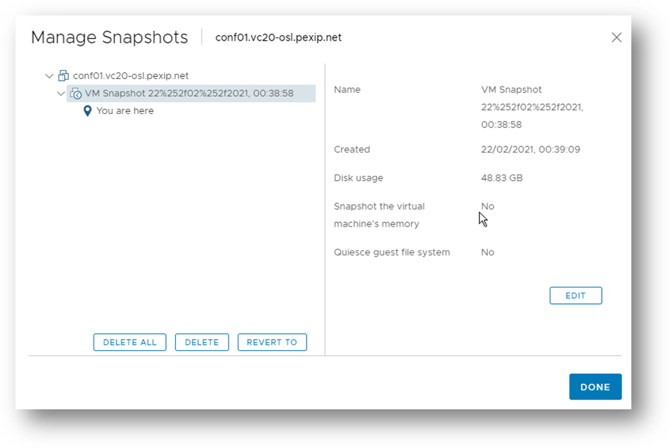
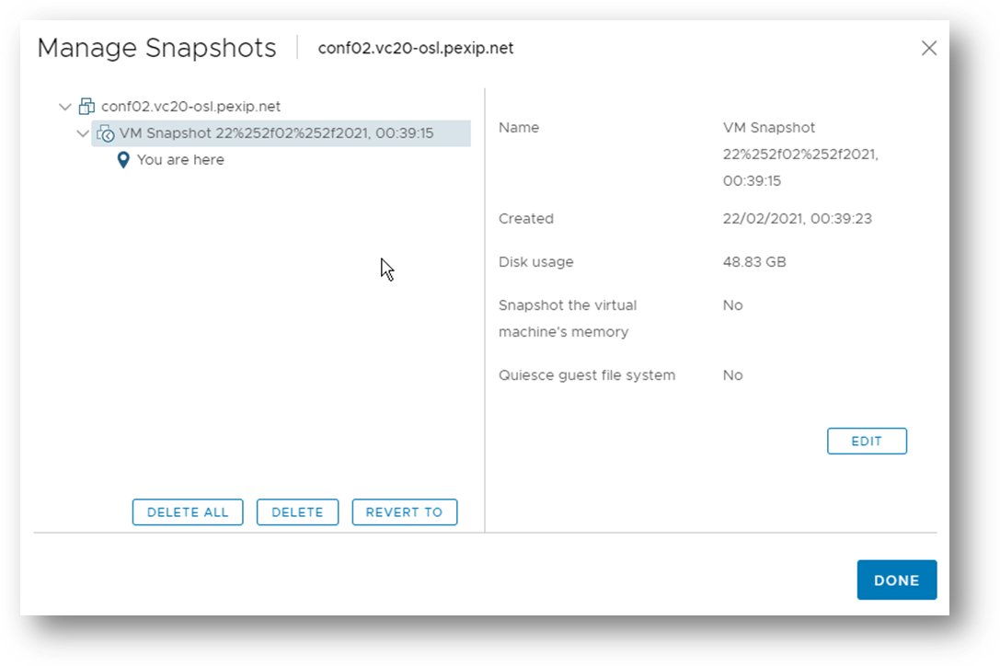
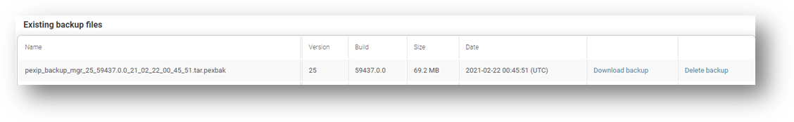
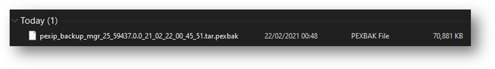
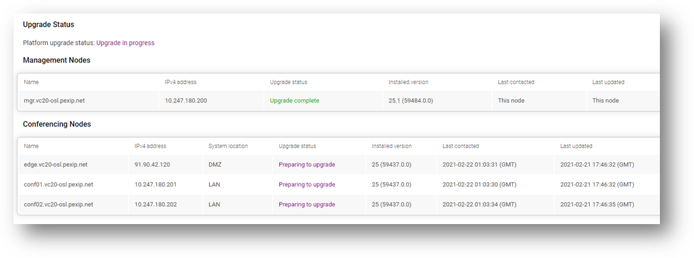

Demonstrate your ability to administer a Pexip Infinity system.
Check your system against the screenshots below that show the Infinity upgrade process. Note the offline Infinity configuration backup, VM snapshots of the nodes, and demonstrate the operation upgrade process.
A screenshot of the VM snapshot (on vCentre) of the Management node:

A screenshot of the VM snapshot (on vCentre) of the LAN Conferencing node 1:

A screenshot of the VM snapshot (on vCentre) of the LAN Conferencing node 2:

A screenshot of the VM snapshot (on vCentre) of the DMZ Conferencing node:
A screenshot of the Infinity configuration backup:

A screenshot of the Infinity configuration backup stored offline:

A screenshot of the Infinity Upgrade Status in progress:

A screenshot of the main live view of the Infinity upgrade in progress: